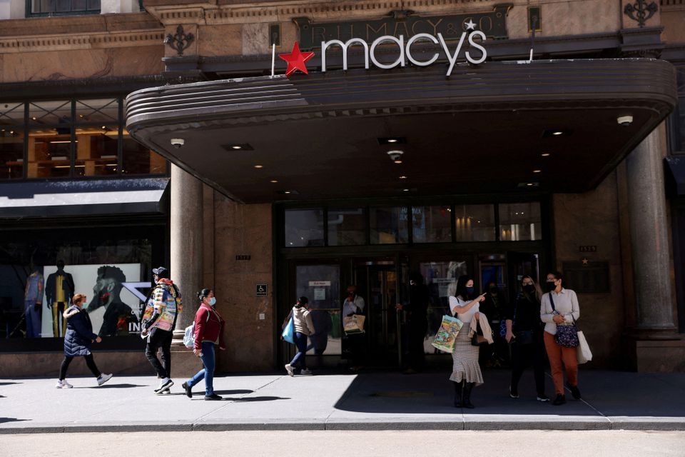

Macy's profits from wealthy shoppers, Kohl's feels inflation pinch
Read the original news here
Nov 17 (Reuters) - Upscale U.S. retail chain Macy's Inc raised its annual profit forecast on Thursday on resilient demand for high-end clothes and beauty products, while the inflation squeeze on lower-income shoppers forced rival Kohl's Corp to scrap its forecast.
Luxury goods sales have held up for Macy's (M.N) as affluent shoppers returning to social events after the pandemic splurge on pricier handbags, perfumes, clothing and gifts heading into the holiday season.
But Kohl's withdrew its annual forecasts, as the company, which caters more to lower-income customers and stocks fewer luxury goods, reeled from weakening demand due to rising prices.
"The Kohl's customer is being hit by inflation a lot more than Macy's," said Jane Hali & Associates analyst Jessica Ramirez.
"Shoppers are also now traveling and returning to offices, and Macy's has a better collection of those products. You're not going to Kohl's for dresses," she said.
Shares of Macy's rose 10%. On Wednesday, the stock fell 8% as a holiday sales warning from Target Corp (TGT.N) pummeled retail stocks.
Inventories at Macy's were up just 4% in the third quarter from a year ago, thanks to heavy discounts to clear excess stocks of casual and athleisure apparel. Kohl's inventories ballooned 34%.
Macy's warned of more promotions heading into the holidays and reversed its earlier position that Christmas shopping would start early, saying consumers were holding out in the hope of getting discounts.
"(Consumers) are under a tighter budget, feeling the impact of inflation on non-discretionary items and beginning to deplete their savings. With that in mind, we believe they are waiting until closer to holiday to make purchases," Macy's Chief Executive Jeffrey Gennette said.
Kohl's executives also made similar comments on an analyst call.
Macy's raised its fiscal 2022 adjusted per-share profit forecast to $4.07 to $4.27 from $4 to $4.20.